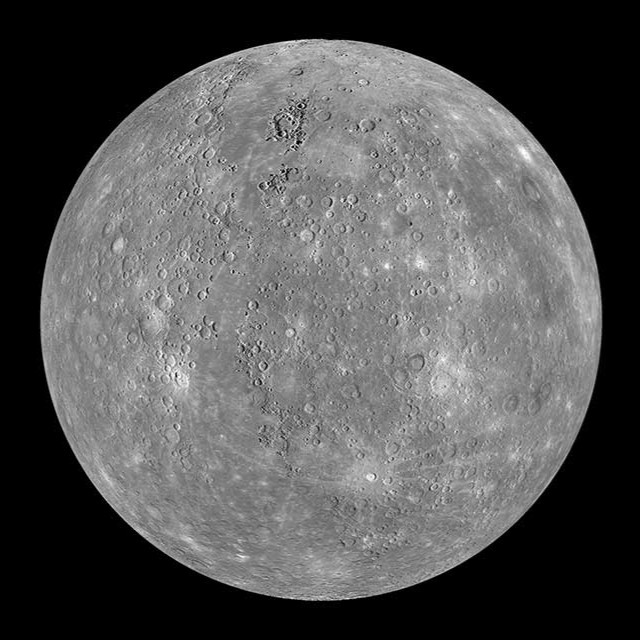

Similar in size and structure to Earth, Venus has been called Earth's twin. These are not identical twins, however – there are radical differences between the two worlds. Venus and Earth are similar in size, mass, density, composition, and gravity. There, however, the similarities end. Venus has a thick, toxic atmosphere filled with carbon dioxide and it’s perpetually shrouded in thick, yellowish clouds of mostly sulfuric acid that trap heat, causing a runaway greenhouse effect. It’s the hottest planet in our solar system, even though Mercury is closer to the Sun.
Venus has crushing air pressure at its surface – more than 90 times that of Earth – similar to the pressure you'd encounter a mile below the ocean on Earth. Venus was the first planet to be explored by a spacecraft – NASA’s Mariner 2 successfully flew by and scanned the cloud-covered world on Dec. 14, 1962. Since then, numerous spacecraft from the U.S. and other space agencies have explored Venus, including NASA’s Magellan, which mapped the planet's surface with radar. The former Soviet Union is the only nation to land on the surface of Venus to date, though the spacecraft did not survive long in the harsh environment.